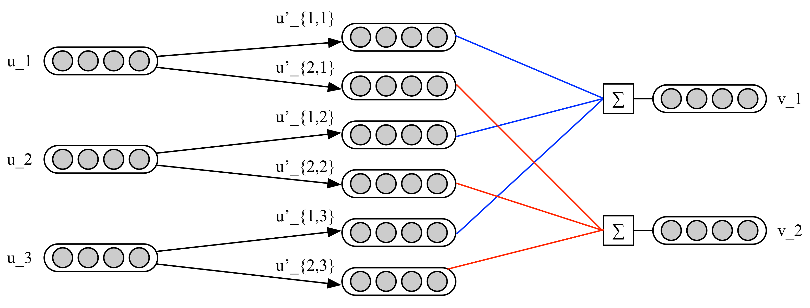

Dynamic Routing Between Capsules
这是一篇在NIPS2017备受关注的论文，文章链接。作者Sara Sabour, Nicholas Frosst, Geoffrey E. Hinton。
文章主要做了：以向量形式特征表示capsule代替标量形式的特征表示neuron；以iterative routing-by-agreement机制代替max-pooling。
1 CNN vs Capsule Network
CNN在特征提取方面具有优势，但其无法表征特征之间的关系。举个例子，一张正常的人脸图片和将这张图片进行嘴和眉毛的错位后的图片，丢给CNN模型预测，得到的结果极有可能一样。CNN的做法是通过更多的data augumentation的例子来训练模型，使模型可以记忆这些变体。不同于CNN, 在该文提出的Capsule，以向量形式表示特征。向量的模长表示该特征出现的概率，向量的方向则代表了特征的一些属性的组合（如位置，颜色等），具有良好的表征。另一方面，在最大池化过程中，CNN通过选择丢弃部分信息而保留了最主要的特征，这对于重叠数字的判别上会存在较大的问题，而Capsule抛弃了池化，用动态路由机制进行前后两层Capsule的信息传递。
2 CapsNet结构
在该文中，CapsNet的结构依次为ConvNet Layer, Primary Capsules和Digit Capsules。以MNIST dataset为例，
- 第一层为ReLU Conv:
- 1 input to 256 neurons.
- \(9\times 9\) kernel with 256 channels and a stride of 1
- 第二层为Primary Capsules:
- 256 neurons to 8 Capsules.
- \(9\times 9\) kernel with 32 channels and a stride of 2
- 第三层为Digit Capsules:
- 8-D Capsules to 16-D capsules
- output is computed through the transformation matrix \(W_ij\) between \(u_i\) to \(v_j\)
各层的特征输出维度分别为：
\begin{array}{|ll|} \hline Layer & Shape \\ - & bn\times 1\times 28\times 28 \\ ReLU Conv & bn\times 256\times 20\times 20 \\ Primary Capsules & bn\times 8\times 32\cdot6\cdot6 \\ Digit Capsules & bn\times 10\times 16\times 1 \\ L_{2norm} & bn\times 10\times 1\times 1 \\ \hline \end{array}3 Routing-by-agreement
下表给出相关的符号说明： \begin{array}{|lll|} \hline v_j & 指L+1层的capsule\ s_j 经过"squashing"的非线性变换\\ s_j & 指L+1层的capsule\ j\\ \hat{u}_{j|i} & 指L层的i经过转换矩阵W_{ij}后的prediction vector(预测向量)\\ c_{j|i} &与u_{j|i}相关的coupling coefficient(耦合系数)\\ u_i & 指L层的capsule\ i \\ W & 转换矩阵 \\ \hline \end{array} 从L层的capsule \(u_i\)到L+1层的capsule \(v_j\)的计算如下： \begin{align*} \hat{u}_{j|i} &= W_{ij}u_i\\ s_j &= \sum_ic_{ij}\hat{u}_{j|i}\\ v_j &= \frac{||s_j||^2}{1+||s_j||^2}\frac{s_j}{||s_j||} \end{align*}其中转换矩阵\(W_{i|j} = m\times k\), 将会通过BP进行更新，\(c_{ij}\)称为coupling coefficients，可视为加权，将会通过routing-by-agreement更新。根据\(\hat{u}_{j|i}=W_{i|j}u_i\)，通过转换矩阵\(W\)与\(u\)的相乘，可以看出每一个L+1层的capsule \(v_j\)都会由转移矩阵对应的权重\((j,i)\)与L层对应的capsule \(u_i\)相乘得到。通过这个关系，将会得到capsule \(u_i\)和capsule \(v_j\)的共计\(j\times i\)个值\(u_{j|i}\)，随后通过耦合系数\(c_{j|i}\)与\(\hat{u}_{j|i}\)相乘求和，得到L+1的capsule \(v_j\)。Routing-by-Agreement的计算过程如下图所示。

耦合系数\(c_i\)与L+1层的\(v_j\)和L层的\(u_i\)都有联系。该系数由动态路由机制进行更新。 该文认为，从该机制中可以看到起初\(c_{ij}\)对所有的capsule \(u_i\)都一样对待，但如果prediction vector \(\hat{u}_{j|i}\)增大，将会影响其对应的耦合系数增加，则其他对应于L层的capsule的耦合系数将会减少，即一种正反馈。下面给出该文的routing-by-agreement的实现方法。
procedure ROUTING(\(\hat{u}_{j|i}, r, l\))
\(\quad\)for all capsule \(i\) in layer \(l\) and capsule \(j\) in layer \(l+1\): \(b_{ij}\leftarrow 0\)
\(\quad\)for r iterations do
\(\qquad\)for all capsule \(i\) in layer \(l\): \(c_i\leftarrow softmax(b_i)\)
\(\qquad\)for all capsule \(j\) in layer \(l+1\): \(s_j\leftarrow \sum_ic_{ij}\hat{u}_{j|i}\)
\(\qquad\)for all capsule \(j\) in layer \(l+1\): \(v_j\leftarrow squash(s_j)\)
\(\qquad\)for all capsule \(i\) in layer \(l\) and capsule \(j\) in layer \(l+1\): \(b_{ij}\leftarrow b_{ij}+\hat{u}_{j|i}\cdot v_j\)
4 实验效果
抗干扰性：对于数据集的抗干扰性能(robustness)更强。在对MNIST的加入细微的Affine transformation，可以看出Capsule相比CNN识别更加准确。（CNN不做data augumentation的而直接进行比较，存疑）
视角变化：对于smallNORB数据集（\(96\times 96\)的立体灰度图片），实现\(2.7\%\)的误差，为state-of-art的结果。
重叠数字：对于MultiMNIST数据集，该文实验认为Capsule识别重影效果比自己的baseline的CNN好。
备注：此处对reconstruction不作讨论。